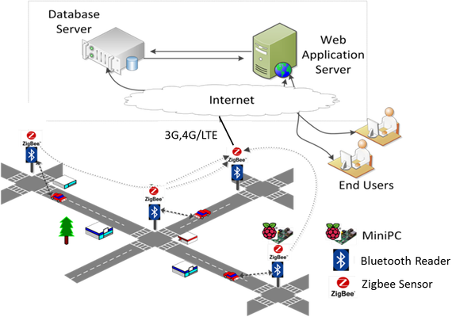
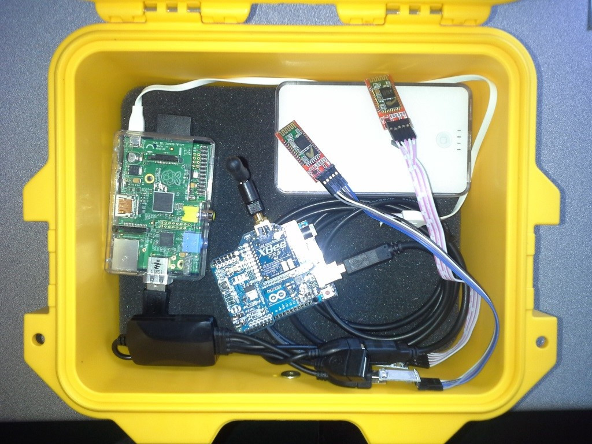
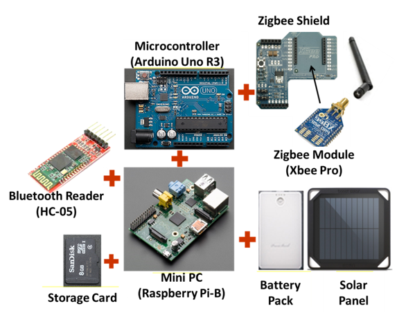
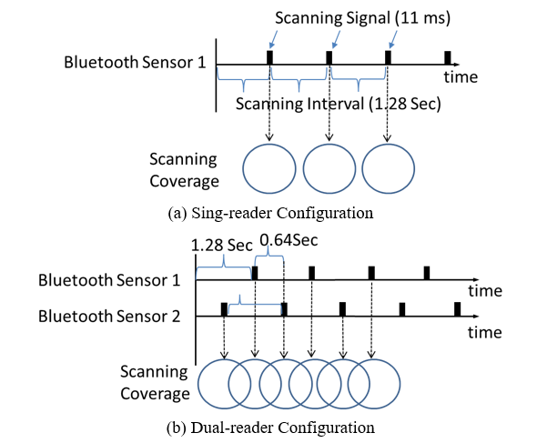
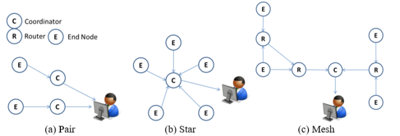
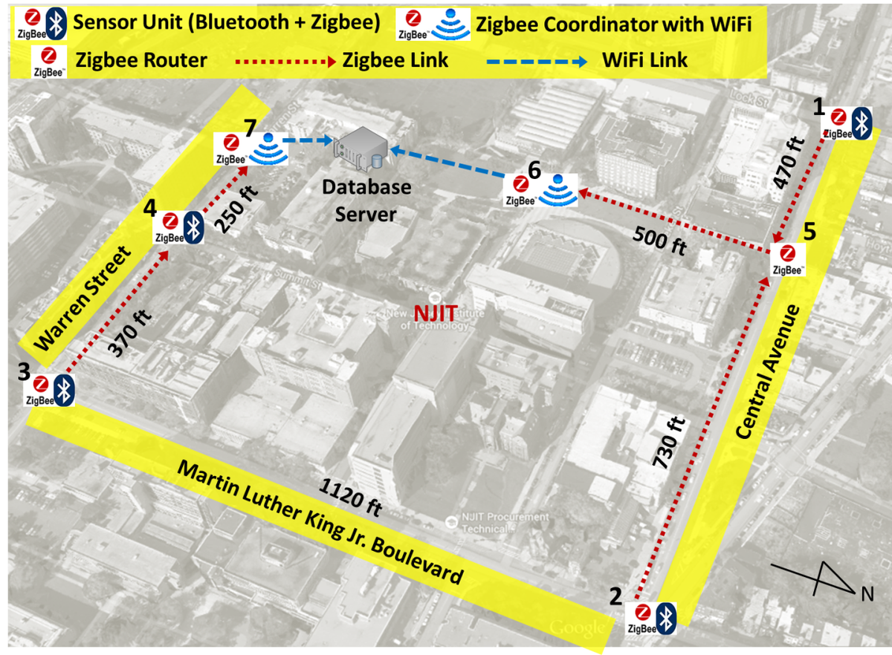
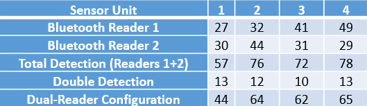
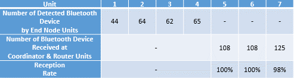

Motivations
- Probe-based traffic detection (e.g., GPS) has gained a great deal amount of attention for traffic monitoring on a real time basis
- Typical GPS unit embedded in the on-board navigation system of a vehicle and mobile devices are mediocre with position error reaching up to 9 meters; the error even gets great in highly urbanized area (known as the urban-valley effect)
- Bluetooth-based traffic detection technology can overcome the inadequacy of GPS-probe traffic monitoring in urban area, as the technology has become more mature.
Research Objectives
- To develop a low-cost, energy-efficient traffic monitoring system that is particularly suitable for being use in highly urbanized area without investing new communication infrastructure

Research Approach
- A wireless mesh sensor network can be formed by using low-energy Bluetooth modules and a Zigbee transceiver to capture high quality GPS-free traffic data.
- A mini PC (i.e. Raspberry Pi) is used to operate the Bluetooth readers and Zigbee transceiver.
- The interfacing program is executed by the mini PC for data exchanging between the Bluetooth readers and the Zigbee sensor
- Data captured is storage to the on-board micro SD card as backup


- A dual-scanner (Class II Bluetooth with 3-meter range) configuration was adapted. It effectively reduce the scanning interval, make it able to capture a vehicle speed up to 102 km/h, compared to 51 km/h with sole-scanner configuration.

- Zigbee transceiver performs three different roles: a coordinator, a router, and an end node.
- coordinator Zigbee: an access point that received all incoming data packet from router and end not Zigbee
- router Zigbee: perform transmitter and receiver roles from adjacent nodes

- A proof-of-concept test was conducted on NJIT campus during pm-peak hours from 4:00 to 6:00



References
- J. Lee, Z. Zhong, B. Du, S. Gutesa, and K. Kim, “Low-cost and energy-saving wireless sensor network for real-time urban mobility monitoring system,” J. Sensors, vol. 2015, pp. 1–8, 2015.